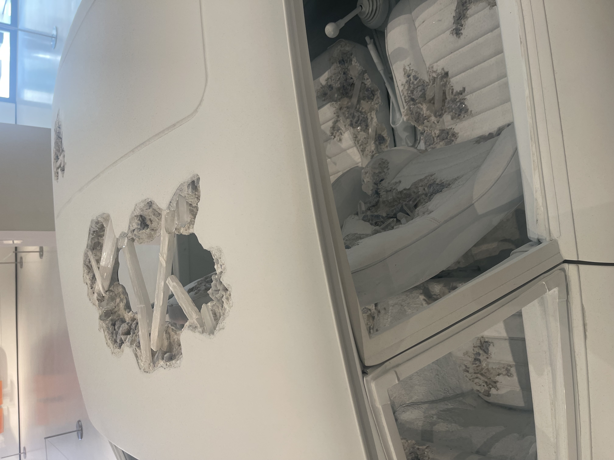
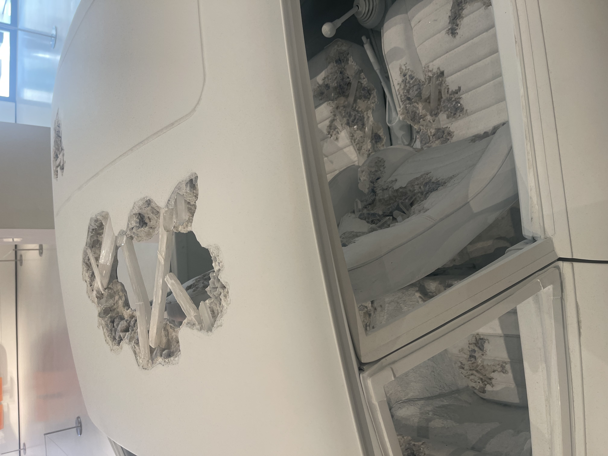

Posted August 28, 2025

Though modern art can be polarizing, I found a few wonderful pieces at Moco Museum in London!

As I finished off this summer in London, I stopped by Moco Museum, and boy was it a mixed bag! Most modern art museums have some winners and some stinkers, and when I was hit with two MASSIVE Jeff Koons stinkers upon entrance, I knew Moco would be no exception. Even so, there were several contemporary works that I really connected with and found beautiful. Since I’d always rather express my positive experiences with art, here are some of my favorite works I saw at Moco London:
As a someone with an academic obsession with Keith Haring’s works, I was pleasantly surprised to see this work, as I had no clue that Haring had ever created metal mask sculptures. Seeing Haring’s bold lines and classic pop art motifs on a shiny, three-dimensional surface was quite exciting and made the drawings feel dynamic and in-motion. As the work’s caption card explained, Haring created a series of eight masks in 1987, which would tragically turn out to be the end of his life. While Haring broke up his often joyous works with occasionally darker, pessimistic, and irreverent themes, this work felt particularly angry, and it startled me a bit. It’s a sharply emotional work, and it’s stuck with me quite a bit since my Moco visit.
I’m not the biggest Andy Warhol fan, but I had never seen these stills before and was immediately curious about the comic book references. Apparently, one of Warhol’s many experimentations with film included a semi-lost, unfinished feature titled BATMAN DRACULA starring Jack Smith in both titular roles and done without the permission of DC Comics. The difficulty I had finding information about this film beyond the surface-level was shocking and emphasizes the importance of conversations about lost media. It would be a great but unlikely move by DC to acknowledge and help to preserve this film, as fan films and fan-made media are integral to the history of any franchise, let alone a passion project from a preeminent modern artist. These photographs were incredibly fun to look at and wonderfully composed, and I loved learning about such a great piece of pop culture art.
 

This piece by Daniel Arsham is one of the coolest sculptures I’ve ever seen. The work is a full-size recreation of a Porsche 911 with patches of seeming wear, except where one might expect rust or debris, there is calcite and quartz. The effect of these crystals is absolutely wonderful and very convincing, as though that is exactly what an eroding Porsche should look like. I’ve seen very few artworks in general beyond works of craftsmen that incorporate crystals and minerals, which is a damn shame because they really do add a breathtaking, otherworldly dimension to this work. Arsham includes this crystalline erosion in his theme of “fictional archaeology,” an imagined scenario where the “automotive age [is] rediscovered” in line with his interest in imagining life on Earth after ecological disaster. As I will discuss with later works in this article, I adore the idea of using art to explore imagined scenarios or speculative stories, especially ones such as this that veer into science fiction. I think this kind of creative speculation yields some of the most creative, exciting, and profound works, though I may be biased as a diehard sci-fi lover. In any case, this was an excellent use of art as a three-dimensional experience and a fantastic bit of modern art with prescient messaging.


Though he is one of the most famous artists alive and an integral part of Japan’s pop art movement, I didn’t know much about Takashi Murakami until January 2024, when I visited San Francisco on a research trip. I spent several hours going through materials at the SF Public Library, and afterwards, I decided to visit the Asian Art Museum next door, which had a temporary exhibit on Takashi Murakami. I was absolutely stunned by the breadth and beauty of his work and have since become a huge fan. As such, I was excited to see such a classic, enormous Murakami work on display. Every single inch of this very large, long painting was covered in lovely, playful and colorful detail, and I made sure to gaze at it for a minute or two from several different positions. I think the color in Murakami works is what enraptures me and has me rooted to the spot whenever I’m presented with a Murakami, and seeing it in such significant scale was all but paralyzing.
These pieces, Leanne and Ed, lift. (2008) and Caterina dancing in black trousers. 4. (2010), are nice examples of work that’s hypermodern while preserving a meaningful sense of personality and intention. While Julian Opie’s other work (in my opinion) blows right past that line into overly ironic and banal modern art that feels for-profit, his best pieces are those with dancing subjects. These two are great examples of his skill with capturing a visceral sense of movement, fun, and rhythm, replacing emotion conveyed through facial features and expressions with palpable body language. I seriously admire the physicality of these works, and standing in front of them, you get infected with their energy and feel the urge to join their dance.

As someone obsessed with fiber arts, I was so excited to see this rug by Miranda Makaroff on display. The details and coloring on this piece are wonderful and vibrant, and alternating the distance at which I viewed it had a profound effect on my experience. This rug is just contagious joy.
As with Arsham’s car, Pilar Zeta’s Future Self Recalibration Lab (2024) and Arsham’s Lunar Garden were favorites of mine because they brought to life speculative and fantastical settings, like sets from a sci-fi movie or places pulled straight out of another dimension. There is absolutely nothing like getting to feel like I’m peeking into a world completely different from my own, and for a physical, tangible object created by another human being to do so is nothing short of an absolute miracle. The are the kinds of works that make my heart hurt with appreciation for the magic of artists and with gratitude for boundless human creativity that makes our world infinitely more beautiful.
I hope you enjoyed seeing some works that I found beautiful at Moco London, hopefully you feel inspired to keep an open mind for modern art!